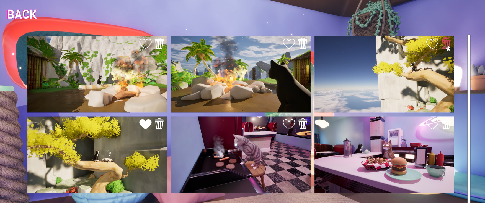
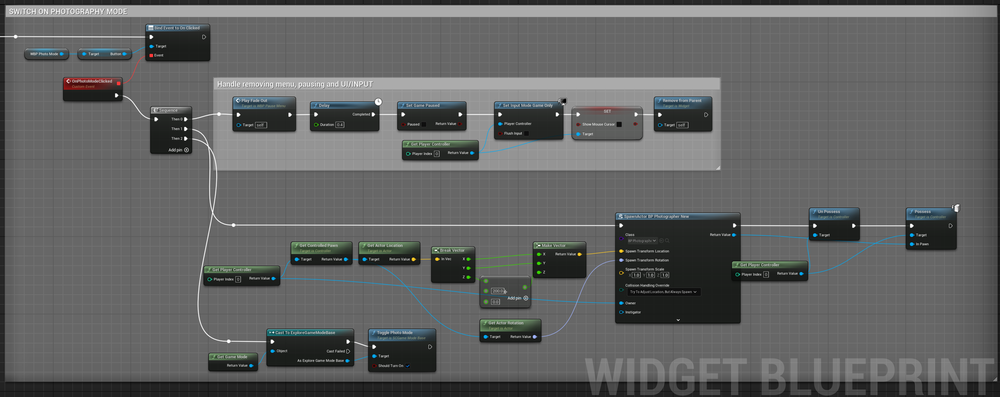

Zappy Cats: Photo Mode and Photo Album

C++, UE5 Blueprints, UE5 Widget Blueprints
Design Goals...
Zappy Cats is a 3D puzzle platformer designed for self-paced exploration. I made an effort to create levels that were both fun to play and beautiful to look at. To get the most out of that, and to give the player a different way of engaging with the game, I added a Photo Mode and a Photo Album. Players can switch into Photo Mode and take screenshots, then see their images through the Photo Album.
Features...
- Move a camera around the level up to a set distance from the Cat character
- Adjust camera focal length and rotation
- Take screenshots. The animated camera overlay and shutter SFX make it more satisfying.
- Review, favorite, or delete screenshots through the Photo Album
Demo video of Photographer Mode.
Demo video of Photo Album.
Photographer...
The first thing I did was set up a Photographer class to prototype the movement and screenshot abilities. One thing I noticed right away was that while it was fun to snap photos and move around freely, players might exploit that movement to peak around the level and ruin the fun of exploring. I decided to tether the Photographer to within a set radius of the Cat, and gave it collision so that it couldn't clip through objects. This means if the player wants to get a close-up of something they need to be within range of it.
The following function is used to constrain the Photographer's movement to within the Tether Radius of the Cat.
void APhotographer::FixOvershoot()
{
FVector FromCatToPhotographer = GetActorLocation() - CatCharacter->GetActorLocation();
const float Distance = FromCatToPhotographer.Length();
if (Distance > TetherRadius)
{
// Adjust position vector by the percent overshoot
FromCatToPhotographer *= TetherRadius / Distance;
const FVector FixedLocation = CatCharacter->GetActorLocation() + FromCatToPhotographer;
// Smoothly move Photographer back in bounds
FVector LerpLocation = FMath::Lerp(GetActorLocation(), FixedLocation, 0.5f);
SetActorLocation(LerpLocation);
UpdateHUDDistance();
CheckShouldToggleTetherWarning();
}
}
The Photographer class extends Unreal's Pawn class, and adds a Floating Pawn Movement Component so that it can move around freely without being affected by gravity. And of course I gave it a Camera Component as well. For taking screenshots during runtime via C++, and saving them to a specific file, I must thank Jamie Holding whose (now archived) blog post on the subject was exactly what I needed. Thank you!
void APhotographer::Capture()
{
// Tell PlayerController to play Camera animation
if (ACatPlayerController* CatPlayerController = Cast<ACatPlayerController>(GetController()))
{
CatPlayerController->PlayCameraAnimation();
}
// Thank you Jamie Holding for the following code...
//https://web.archive.org/web/20191230192143/https://blog.jamie.holdings/2019/09/08/taking-screenshots-in-game-in-unreal-engine-4-23/
// Generate a filename based on the current date
const FDateTime Now = FDateTime::Now();
FString ImageDirectory = USCJsonFunctionLibrary::GetScreenshotsFolderPath();
const FString ImageFilename = FString::Printf(TEXT("%s/Screenshot_%d%02d%02d_%02d%02d%02d_%03d.png"), *ImageDirectory, Now.GetYear(), Now.GetMonth(), Now.GetDay(), Now.GetHour(), Now.GetMinute(), Now.GetSecond(), Now.GetMillisecond());
FScreenshotRequest::RequestScreenshot(ImageFilename, false, false);
/// ^^^^^ End of borrowed code ^^^^^
// save screenshot to json
RegisterScreenshot(ImageFilename);
}
Photo Mode...
Once I was happy with the Photographer class I needed to figure out how to let the player use it. I debated making the switch with a keybinding, like the ones used to move or jump, but wanted to discourage players from switching to it while falling or otherwise unsafe. With that in mind, I decided to add access through the Pause Menu.
The transition between Player and Photo Mode was handled first within the Pause Menu Widget Blueprint after the player clicks the "Photo Mode"-Button. From there it creates an instance of the Photographer class, gets the PlayerController and switches possesion from the Cat to the Photographer, then triggers my extended GameMode class's OnTogglePhotoMode event.

Within the C++ code for my extended PlayerController class, we subscribe to this event so that we can switch from the Cat HUD overlay to the Photographer Overlay, and remove the crosshairs. The Cat character remains in the level so that player's can include it in their photos if they want. Code-side, the PlayerController keeps track of the Cat even while it's not actively possesed, so that when we switch back to Player Mode we don't have to respawn the Cat. We also use the Cat's location as the anchor for the Photographer.
Photo Album...
With a working Photo Mode it was now time to handle what to do with the pictures! I wanted the players to be able to look back through their screenshots like they'd been making a photo album of their progress through the game. I made the Photo Album accessible from the Main Menu, purely so that players would easily see it and know where to find it. A fun feature is otherwise pointless if no one knows about it!
In order to make it functional, I first had to handle how to store the screenshots. Setting up a JSON file to store screenshot information was the simplest way I could think of. It also allowed me to store any metadata I wanted per each image. To help with this I created a custom BlueprintFunctionLibrary for working with JSON files. For this I must thank Alex Quevillon's youtube tutorials on reading and writing to Json through Unreal's C++ API. Thank you!
The Library proved very useful when I then needed to populate the Photo Album's UI with the screenshots. I created two C++ classes for this, an Album class to dynamically populate and display all the photos on the page, and a Photo class for the individual photos. The Album gets the screenshots from the JSON file and then creates an instance of the Photo class for each screenshot, passing them the relevant info for displaying their image and favorited status. The Album also handles updating the JSON file when a photo is deleted or its favorite status changes. Clicking on a Photo will pull up a larger version of it with an Exit btton. I used these classes as parents for thier corresponding Widget Blueprints so that it was easy to get the variables needed to display everything properly within the Unreal Editor.
Retrospective...
While my playtesters were mainly interested in shooting lasers and jumping around (who could blame them?), many were excited about the Photo Mode. I think it was a worthwhile feature to add, and it gives an otherwise short game some padding.
That said, if I had to do it again I would make some improvements. For one, the Photo Album populates images in an acceptable time frame but it could be faster if it used lower resolution thumbnails of each image instead of the actual full size. It would be easy to store into the JSON file, and I would only need to add a way to create the thumbnail per image after taking a screenshot. Players would still be able to see the higher resolution image when clicking on the thumbnails. Additionally, it would be nice to have arrow buttons when viewing the larger images so that we don't have to exit out just to see the next one. Game play wise, I wanted to add a Photo-Op feature where the player could earn acheivements for taking screenshots in certain locations, but I ran out of time. Maybe for the next game!